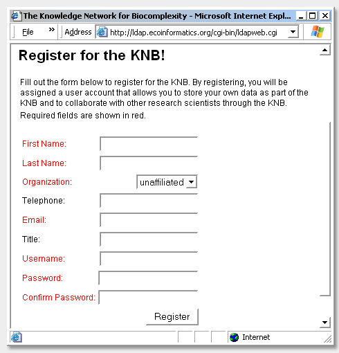
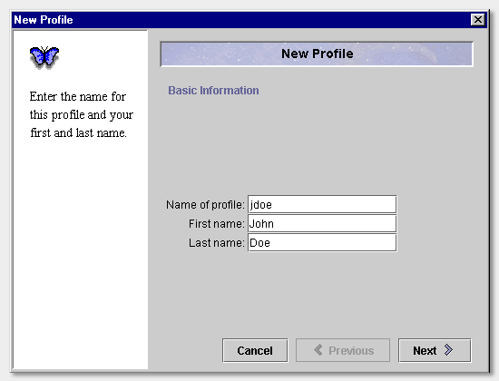
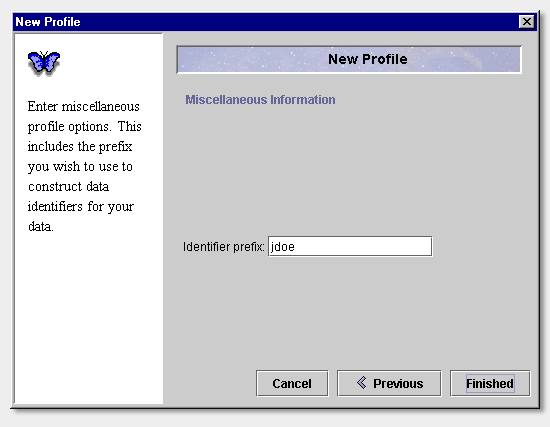
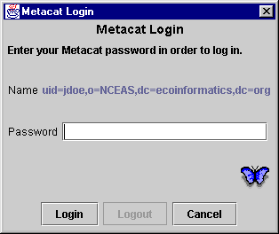

Morpho
User Guide
|
Morpho
User Guide
|
||||||
| KNB Home | Data | People | Informatics | Biocomplexity | Education | Software | |
| Getting Started | |
|
Register for the KNB
The first thing you should do after installing Morpho (but before *running* Morpho) is register yourself for the KNB. Go to knb.ecoinformatics.org and fill out the following form. Be sure to remember your username and password!  Create a Morpho Profile
The first time you execute Morpho, you will be asked to create a new profile. This profile allows you to use Morpho locally on your PC and, once registered for the KNB network (see preceding paragraph), will allow you to create, edit and search for datasets on the KNB.  Click "Next" to move on to the New Profile Account Information screen. Here you should enter the Metacat username under which you registered on the knb.ecoinformatics.org site.
Click "Next" to move to the New Profile Identifier screen. This identifier will become the prefix of your stored metadata file names. For example, jdoe.xml.  Click "Finished" to move on to the Metacat Login screen, where you should enter your Metacat password.  ! By entering your password and clicking the login button you will be able to create, edit, search and manage data both locally and on the KNB. By selecting 'Skip Login' you will be able to do all the previous operations locally as well as search for datasets on the KNB. However, you will not have access to create and edit datasets on the KNB. |
|
|
|
 Previous
Main Morpho Screen Previous
Main Morpho Screen
|